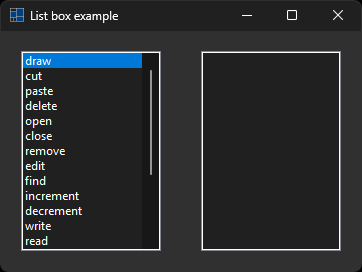

|
xtd
0.2.0
|
Loading...
Searching...
No Matches
list_box.cpp
demonstrates the use of xtd::forms::list_box control.
- Windows

- macOS
- Gnome
#include <xtd/forms/application>
#include <xtd/forms/form>
#include <xtd/forms/horizontal_layout_panel>
#include <xtd/forms/list_box>
using namespace xtd;
using namespace xtd::forms;
namespace list_box_example {
public:
form1() {
text("List box example");
client_size({360, 240});
layout_panel.parent(*this);
layout_panel.controls().push_back_range({list_box_left, list_box_right});
layout_panel.control_layout_style(list_box_left, {size_type::auto_size, true});
layout_panel.control_layout_style(list_box_right, {size_type::auto_size, true});
layout_panel.dock(dock_style::fill);
layout_panel.padding(forms::padding(20));
list_box_left.double_click += [&] {
if (list_box_left.selected_index() != list_box_left.npos) {
list_box_right.items().push_back(list_box_left.selected_item());
list_box_right.selected_index(0);
list_box_left.items().erase_at(list_box_left.selected_index());
}
};
list_box_right.sorted(true);
list_box_right.double_click += [&] {
if (list_box_right.selected_index() != list_box_right.npos) {
list_box_left.items().push_back(list_box_right.selected_item());
list_box_left.selected_index(0);
list_box_right.items().erase_at(list_box_right.selected_index());
}
};
list_box_left.items().push_back_range({"draw", "cut", "paste", "delete", "open", "close", "remove", "edit", "find", "increment", "decrement", "write", "read", "post", "build", "make", "release", "create", "choose", "erase"});
list_box_left.selected_index(0);
}
private:
horizontal_layout_panel layout_panel;
list_box list_box_left;
list_box list_box_right;
};
}
auto main()->int {
application::run(list_box_example::form1 {});
}
Represents a window or dialog box that makes up an application's user interface.
Definition form.h:52
Used to group collections of horizontally aligned controls.
Definition horizontal_layout_panel.h:28
Represents a display device or multiple display devices on a single system.
Definition padding.h:23
The xtd::forms namespace contains classes for creating Windows-based applications that take full adva...
Definition xtd_about_box.h:12
The xtd namespace contains all fundamental classes to access Hardware, Os, System,...
Definition xtd_about_box.h:10
Generated on Thu Feb 22 2024 17:56:36 for xtd by Gammasoft. All rights reserved.